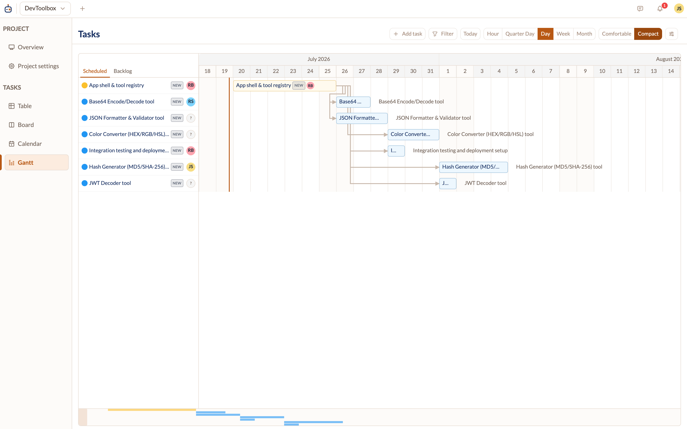
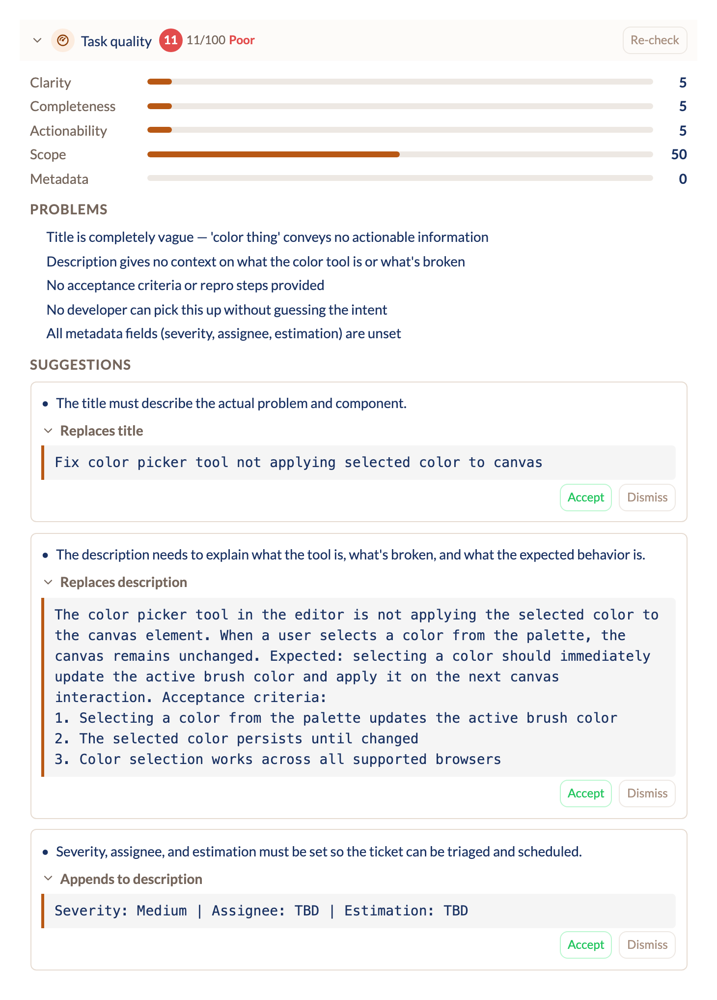
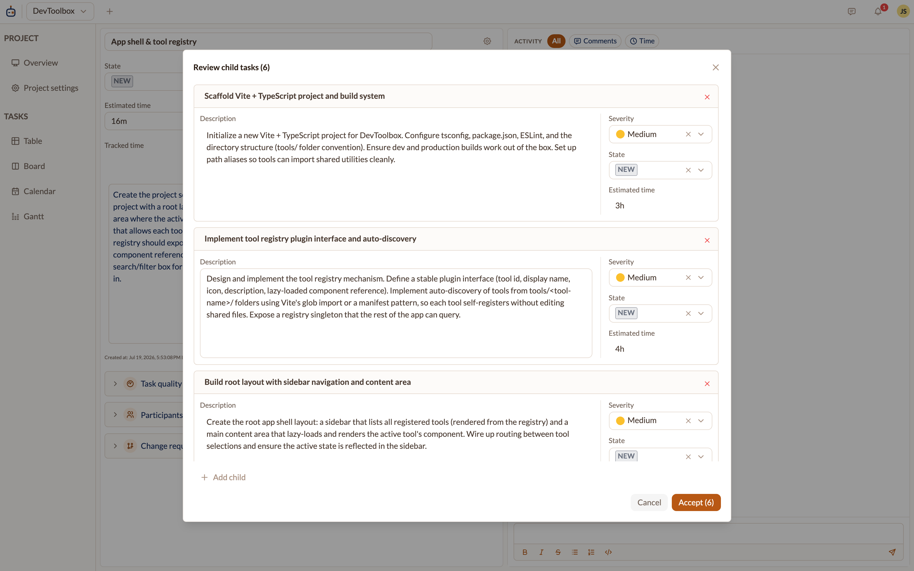
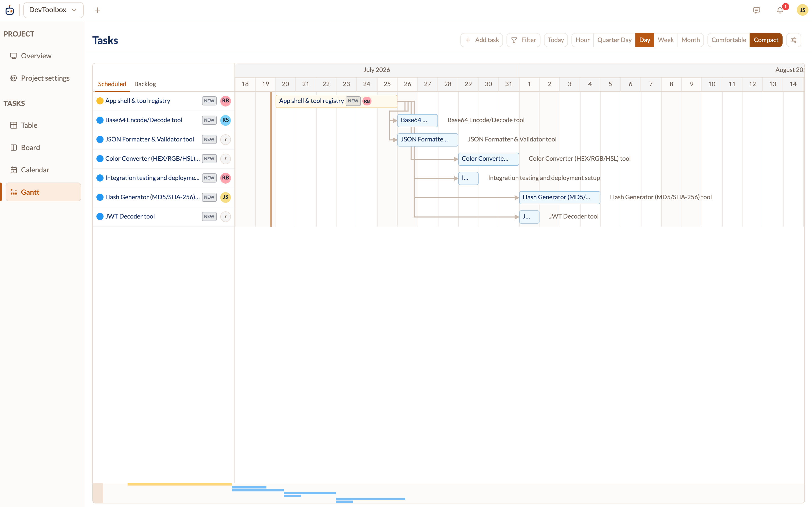
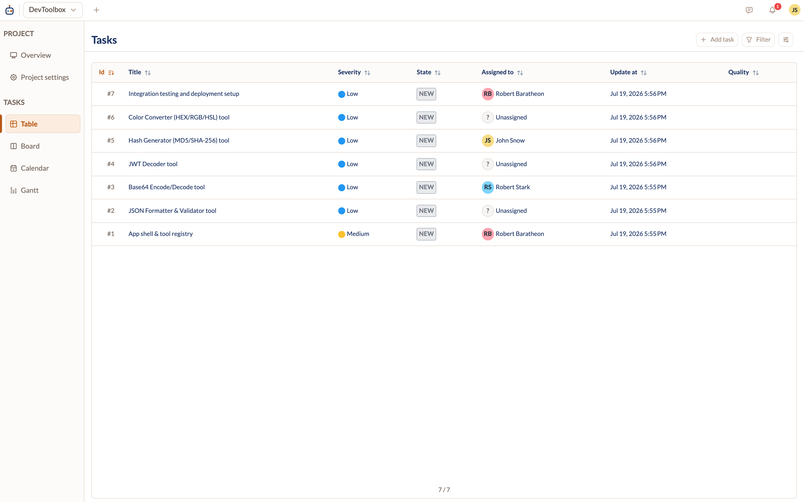
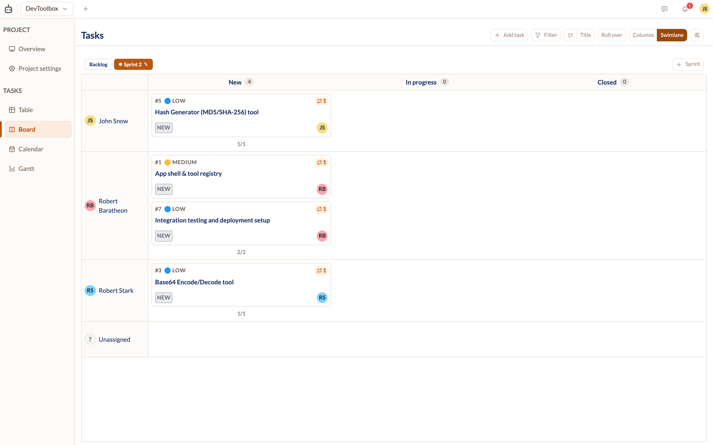
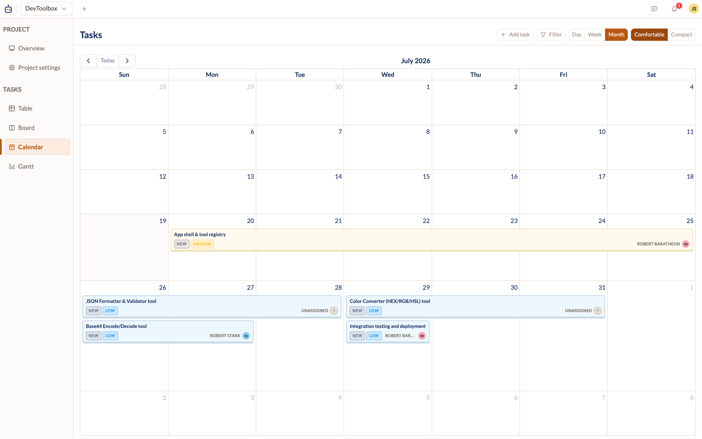

A work management platform built for AI-first teams. Agents pick up tickets, do the work, and open pull requests — humans review and approve. Every AI feature ships from day one.

Assign an issue to a bot backed by a Goose gateway. The agent moves through staged phases with a human approval gate between each one. Nothing merges without you.
Describe a project in a few sentences. The AI generates a staged backlog — titles, descriptions, hierarchy, and schedule relations — shown in a staging view. One click accepts the whole plan.
An inline quality score on every issue you create or edit, with concrete improvement suggestions — missing context, vague acceptance criteria. The AI suggests, you decide.

Click split on a big ticket, optionally steer how it should be broken down, and the AI proposes the right child tasks. Review and accept — nothing is created without your sign-off.
The whole backlog is drivable from any MCP-capable
tool — Claude Code, Cursor — via
create_issue, list_issues,
add_relation, and friends.

One command palette for navigation, issue actions, and search — no reaching for the mouse. Fuzzy-match, act, and move on.
> commands ·
@ people ·
# tasks ·
/ navigation
Table, Gantt, kanban, calendar — pick the one that fits the moment.




One Docker Compose stack on your own machines. No cloud service, no SaaS, no third party holding your backlog — tickets, code, and credentials stay where you put them.
One docker compose up from published
images. Everything runs on your hardware.
Git tokens encrypted at rest, one-time secrets, bot-scoped API keys, admin-gated user creation.
Nothing is sent to any cloud or analytics provider. Even AI can run fully local via Ollama.
Agents run fully local via Ollama, or against your own Anthropic, Gemini, or Ollama Cloud key — your choice.
Flexible enough to run your entire operation.